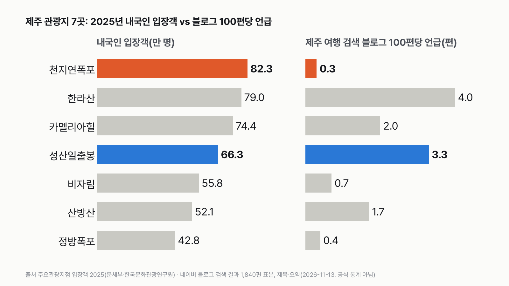

블로그에 적게 나와도 사람은 많아요
블로그 후기가 적다고 한적한 곳은 아니에요. 사람이 얼마나 오는지는 블로그 글 수보다 입장객 통계로 확인하는 편이 정확해요.

3줄 요약
- 2025년 제주 천지연폭포를 찾은 내국인은 82.3만 명으로, 성산일출봉(66.3만 명)보다 많았어요.
- 그런데 제주 여행 검색 결과 블로그 글 1,840편 중(표본) 천지연폭포가 나온 글은 100편당 0.3편, 성산일출봉은 100편당 3.3편이에요. 12배 차이예요.
- 7곳 전체로 보면 블로그에 많이 나오는 곳이 사람도 많은 편이지만, 천지연폭포처럼 크게 어긋나는 곳이 있어요.
| 관광지 | 2025년 내국인 입장객 | 블로그 100편당 언급 |
|---|---|---|
| 천지연폭포 | 82.3만 명 | 0.3편 |
| 한라산 | 79.0만 명 | 4.0편 |
| 카멜리아힐 | 74.4만 명 | 2.0편 |
| 성산일출봉 | 66.3만 명 | 3.3편 |
| 비자림 | 55.8만 명 | 0.7편 |
| 산방산 | 52.1만 명 | 1.7편 |
| 정방폭포 | 42.8만 명 | 0.4편 |
천지연폭포: 내국인은 가장 많고, 블로그 언급은 가장 적어요
일곱 곳 가운데 2025년 내국인이 가장 많이 찾은 곳은 천지연폭포(82.3만 명)예요. 그런데 블로그 언급은 100편당 0.3편으로 가장 적어요.
성산일출봉은 내국인 66.3만 명으로 천지연폭포보다 16.1만 명 적은데, 블로그에는 100편당 3.3편 나와요.
정방폭포와 산방산도 비슷해요
정방폭포(42.8만 명)와 산방산(52.1만 명)은 입장객이 1.2배 차이예요. 블로그 언급은 100편당 0.4편과 1.7편으로 4.4배 차이예요.
그래도 대체로는 같은 방향
제주 관광지 21곳을 모두 놓고 보면, 블로그 언급 순위와 입장객 순위는 꽤 비슷하게 움직여요(순위 상관 0.78). 한라산·성산일출봉·카멜리아힐은 둘 다 위쪽이에요. 천지연폭포처럼 크게 어긋나는 곳이 몇 군데 있어요.
여행 팁: 두 곳 모두 2월이 가장 한산했어요
2025년 달별 입장객(외국인 포함)을 보면 천지연폭포와 성산일출봉 모두 2월이 가장 적었어요. 천지연폭포 4.2만 명, 성산일출봉 4.1만 명이에요.
가장 붐빈 달은 천지연폭포 11월(10.5만 명), 성산일출봉 10월(11.1만 명)이에요.
숫자를 다시 보며
블로그 글은 쓰는 사람만 써요. 왜 어긋나는지는 이 자료로 알 수 없어요. 여러분은 여행지를 고를 때 블로그 후기 수를 얼마나 믿나요?
이 숫자는 어디서 왔나요
출처
기준일 입장객은 2025년 1~12월, 블로그 글은 2026년 11월 13일에 받은 것이에요.
| 데이터 | 출처 | 쓰임 |
|---|---|---|
| 주요관광지점 입장객 2025 | 문화체육관광부·한국문화관광연구원, 관광지식정보시스템(know.tour.go.kr) | 관광지별 달별 내국인·외국인 입장객 |
| 블로그 언급 글 | 네이버 검색 API(블로그) 제목·요약, 2026-11-13 수집 | 관광지별 언급 글 수(공식 통계 아님) |
어떻게 셌나요
- 입장객: 문화체육관광부·한국문화관광연구원 주요관광지점 입장객 통계, 2025년 1~12월 합계. 내국인만 따로 더했어요. 블로그 글이 한국어라 내국인으로 견줬어요.
- 블로그 언급 글(공식 통계 아님): 네이버 검색 API(블로그)로 검색어 '제주 여행'·'제주 2박3일 코스'·'제주 겨울 여행'을 정확도순 500편 + 최신순 500편씩 받았어요(2026년 11월 13일). 겹치는 글을 빼면 1,840편이에요. 블로그 전체가 아니라 검색 결과 표본이에요.
- 글 작성일은 2010년 12월부터 2026년 11월 13일까지 섞여 있어요. 기간을 정해서 받을 수 없어요.
- 장소는 API가 주는 제목과 요약에서만 찾았어요. 본문은 열지 않았어요.
- 요약에 협찬 표시(원고료·체험단 등)가 보이는 글은 뺐어요.
- 장소 사전에 있는 이름만 셌어요. 다른 이름으로 쓴 글은 빠질 수 있어요.
- 100편당 언급: 그 관광지가 나온 글 수 ÷ 1,840편 × 100.
- 7곳 고르기: 제주 블로그에 나온 장소 가운데 공식 입장객과 짝지어지고, 2025년 입장객이 40만 명 넘는 곳이에요.
- 순위 상관 0.78: 제주에서 공식 입장객과 짝지어진 21곳의 '협찬 뺀 언급 수' 순위와 '2025년 입장객(외국인 포함)' 순위의 스피어만 상관이에요(data_collect 계산).
한계 5가지
이 데이터로 말할 수 없는 것
- 블로그 언급 수는 공식 통계가 아니에요. 검색어마다 최대 1,000편만 받을 수 있어서, 전체 블로그 글이 아니라 일부예요.
- 장소를 제목·요약에서만 찾아서, 본문에만 나온 장소는 세지 못해요. 무작위 50편을 직접 확인했을 때 장소를 맞게 찾은 비율은 94%였어요.
- 관광지마다 입장객을 세는 방법(발권, 계측기, 추정)이 달라요.
- 해수욕장·시장·거리처럼 입장객을 세지 않는 곳은 견줄 수 없어요.
- 블로그 언급이 많고 적은 이유는 이 자료로 알 수 없어요.
새 글 나오면 받아 보기
피드 리더 앱에 이 사이트 주소를 한 번 넣어 두면, 새 글이 올라올 때 앱에 떠요. 가입이나 메일 주소는 필요 없어요.
받는 법 보기
- 피드 리더 앱을 하나 골라요. 새 글을 모아 보여 주는 앱이에요. 예를 들면 Feedly나 Inoreader가 있어요. 둘 다 무료고 웹·휴대폰에서 써요.
- 앱에서 '구독 추가'(+)를 누르고 아래 주소를 붙여 넣어요.
- 끝이에요. 새 글이 올라오면 앱 목록에 떠요.
https://protofu.github.io/opendata-insight/feed.xmlFeedly를 쓴다면 여기를 눌러 바로 추가할 수도 있어요.